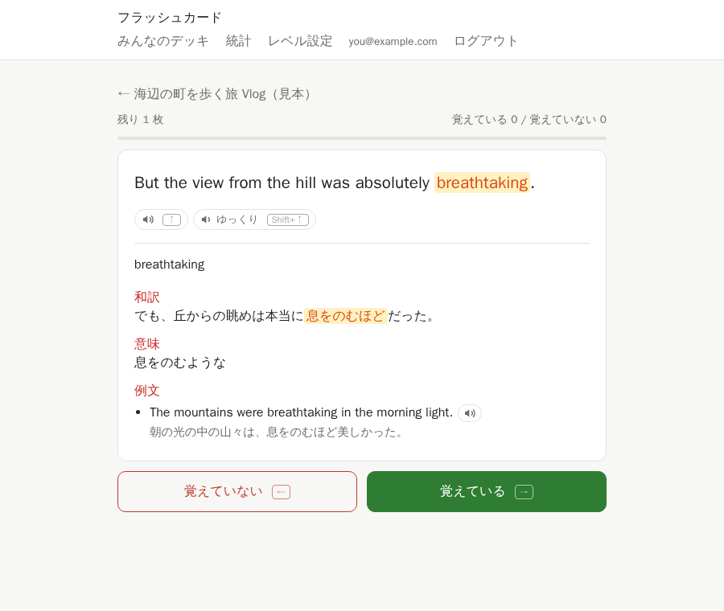
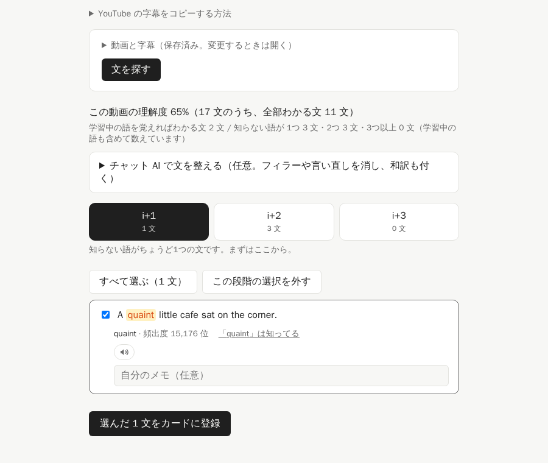
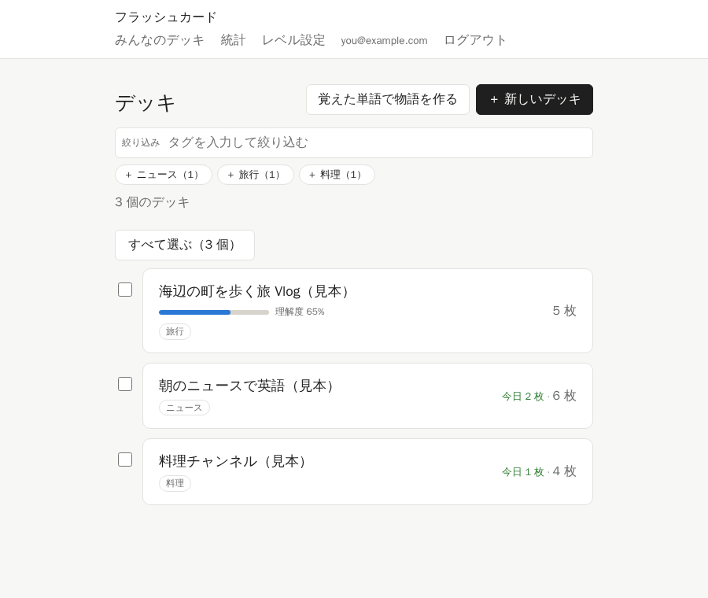
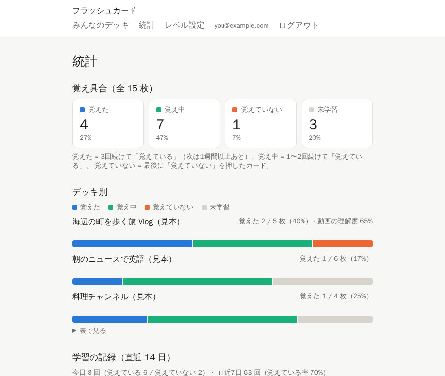

YouTube の字幕を貼るだけで、あなたのレベルにちょうどいい 「知らない単語がひとつだけ」の文を見つけて、暗記カードにします。 あとは毎日、出てきたカードに答えるだけ。忘れるころに、もう一度出てきます。

学習の画面。例文・和訳・意味・例文の読み上げまで、1枚のカードに。
このパンフレットは、3分ほどで読めます。
なぜ、英語は身につかないのか
単語だけを並べて覚えても、どう使うのかわからない。おもしろくないから、続かない。
知らない単語だらけの文は、辞書を引くだけで疲れてしまい、内容が頭に入らない。
いつ復習すればいいかわからない。せっかく覚えた単語が、少しずつ抜けていく。
フラッシュカードは、この3つを「しくみ」で解決します。
いちばんの特長
ほとんどわかる文の中に、知らない単語がひとつだけ。言語学習で「i+1」と呼ばれる、 無理なく身につく難しさです。
英検（3級〜1級）や TOEIC の点数からあなたのレベルを決め、字幕の中から そんな文だけを自動で選びます。知らない単語が2つ・3つの文は「i+2」「i+3」として、 力がついてから挑戦できます。
文ごと覚えるので、単語の意味だけでなく、使い方や場面も一緒に残ります。 好きな動画の中の文だから、思い出すきっかけも多くなります。

字幕を解析した画面。「i+1」に、知らない単語がひとつだけの文が並びます。単語の頻出度もわかり、知っている単語は「知ってる」で外せます。
使い方
英検の級か TOEIC の点数を選ぶと、「知っている単語」の目安が決まります。
好きな動画か、アプリの「動画を探す」で見つけた動画の「文字起こし」をコピーして貼るだけ。
並んだ候補から覚えたい文をチェックして、カードに登録します。
「覚えている / 覚えていない」を押すだけ。次に出す日はアプリが決めます。
「覚えている」を押すたびに、次に出すまでの間隔が延びていきます。 「覚えていない」を押したカードは、その日のうちにもう一度。
日付の切り替わりは毎朝4時。夜に学習しても、翌朝にはちゃんと出てきます。

デッキの一覧。動画ごとの理解度と、今日答えるカードの枚数がひと目でわかります。
続けるための工夫
みんなが学んだ動画を、あなたの理解度で「ちょうどいい」順におすすめ。その場で再生して、すぐデッキに。
お手持ちのチャット AI に頼む文章をボタン1つでコピー。答えを貼れば、和訳・意味・例文・豆知識がカードに入ります。
例文を、ふつうの速さとゆっくりで読み上げ。カードが出たら自動で読む設定も。
覚えた単語を使った短い物語を AI に書いてもらい、まとめて読み返せます。
ほかの人が公開したデッキを、そのまま自分のデッキとして取り込めます。
パソコンなら → で答え、→ / ← で「覚えている / 覚えていない」。手を止めずに進めます。
はい。和訳や解説は、あなたが使っているチャット AI に頼む方式なので、アプリ側で料金はかかりません。
英検3級（中学卒業程度）から。レベルはあとから変えられ、知らない単語の判定も変わります。
ブラウザで動くので、スマートフォンでもパソコンでも。字幕の貼り付けはパソコンが楽です。

統計の画面。覚えた単語の数、デッキ別の進み具合、日ごとの学習回数、苦手な単語がわかります。
登録はメールアドレスだけ、1分で終わります。
最初の1枚を作るまで、5分もかかりません。